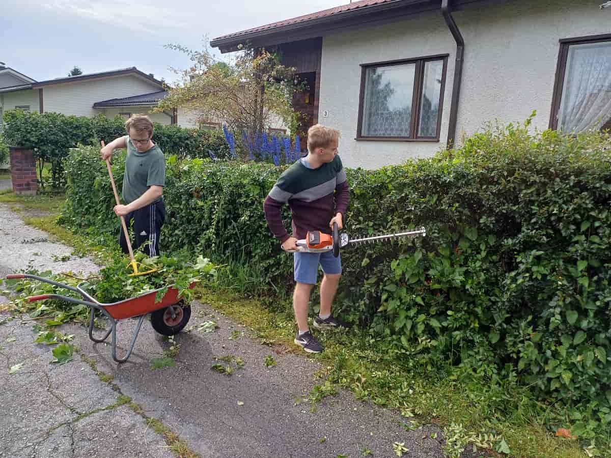

Kaksi veljestä, valmiina auttamaan
Olemme nuoret yritteliäät veljekset Porista. Perustimme kesäyrityksen tarjotaksemme reipasta ja luotettavaa apua sitä tarvitseville sekä oppiaksemme yrittäjyyttä käytännön kautta. Teemme jokaisen työn ahkerasti parhaan kykymme mukaan. Kerro, mitä tarvitset, niin katsotaan yhdessä, voisimmeko avuksi.
💡 Huomaa etu
Meillä on Y-tunnus ja kuulumme ennakkoperintärekisteriin. Tämä tarkoittaa, että kaikki yksityisasiakkaamme voivat saada työstämme verotuksessa 40% kotitalousvähennyksen.
